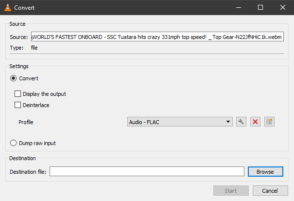
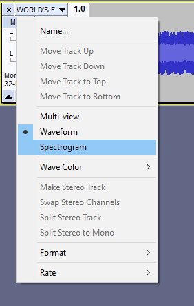
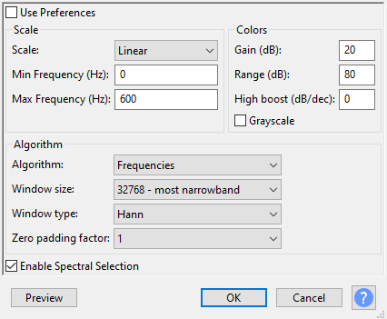
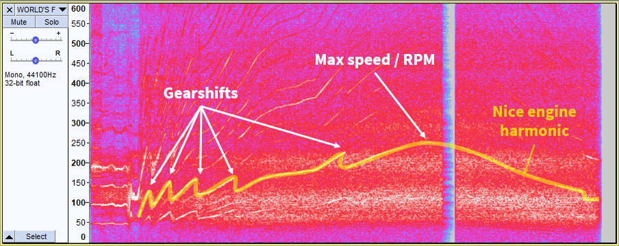
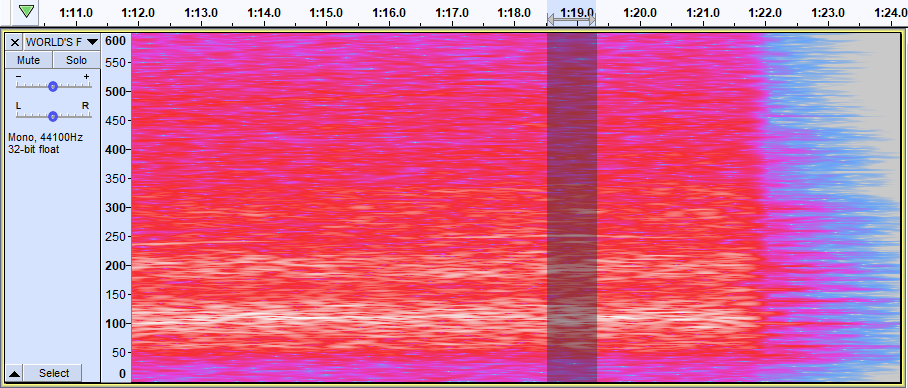

A few days ago, the YouTube algorithm suggested to me and many other a BBC TopGear video about a new world record for the fastest production car.
SSC North America, a sports car manufacturer, claims in this video to have reached 532.8km/h with their latest car (331mph if you still didn't get the memo about the world using metric units). It's a single run and the video doesn't include the second run driving back to the starting point. A real speed record for cars is the mean of the two runs to take into account elevation changes and wind. Still, it's a lot faster than the previous official world record held by Bugatti on their dedicated track at 431km/h, or the non-official world record of Koenigsegg at 447km/h.
You can argue whether these cars are production cars, or the utility to drive at such high speeds when after each run of a few seconds you need to change the tires, the wheels, and sometimes the engine. You can also wonder why our societies still invest in fast supercars cars when they should prioritize low consumption electric cars. Or you can reflect on the point of building cars at all, shouldn't we bike and develop more public transports? I was impressed by this record. I like fast cars, I own a Bugatti Chiron in Lego.
You may have guessed, the record is perhaps invalid. Many people did question the record, by computing the average speed on the road section shown on the video or doing the maths of the aerodynamics force involved at such extremely high speeds for example.
Yesterday, Misha Charoudin who is a professional driver and a vlogger published a video of him and a friend discussing the record attempt with some technical details, such as the gearbox ratios and the wheels dimensions of the car. Using this information, I got the idea to try computing the maximum speed using an audio frequency spectrum analysis. The idea is to use the engine sound to guess the car real speed. Everything is connected, it should be straightforward.
youtube-dl --list-formats https://www.youtube.com/watch?v=N22JfNHiC1k
I selected the format with the highest audio bitrate.
youtube-dl --format 251 https://www.youtube.com/watch?v=N22JfNHiC1k
There is a ffmpeg command to extract the audio from the video, but I used VLC because I didn't feel like installing ffmpeg and searching for the right command. I exported to FLAC because it's a lossless format compatible with Audacity.
The file is in stereo, but the analysis is simpler in mono. I used the "Split stereo to mono" option and deleted one of the track. It doesn't matter which one, but to be sure I tried both and I obtained the same final result.

I selected the spectrogram view, a very cool feature of Audacity.
Nothing is very visible yet, it's mostly (wind) noise. So I tried a few settings and after some tries, I got something a lot more interesting. I used the highest window size and ignored the frequencies above 600Hz as I'm more interested in the main harmonic frequencies of the engine. I also resized the spectrogram view.
The lines are harmonic frequencies of the car components, such as the gearbox, the engine, the wheels, etc. One line is particularly visible, and thanks to the gearshifts it's easy to guess that it's one harmonic related to the engine sound.
I then zoomed on the part when the car is the fastest in the video, and selected the audio where the harmonic is at its highest pitch. I then plotted the spectrum in the analyze menu, to have a more precise idea of the frequency. Finding out where is the corresponding peak in the chart is a bit difficult but it's for sure the one at 251Hz.
So after that, I knew that at the highest speed, my nice engine harmonic had a frequency of 251Hz. I only needed to figure out the formula to compute the RPM from this harmonic frequency. Thankfully, the video from Misha includes data with the engine RPM at two points in time. The dashboard is blurred in the YouTube video of record, I wonder why, but according to the Misha video SSC also published on Instagram videos with a not blurred dashboard, allowing them to know the RPM at two points in time.
I also quickly searched the formula and found out it was something like
RPM = 60 * frequency * something. The main thing is that we need to convert from Hz to RPM and it's
linear.
Using audacity I analyzed the frequencies of the same harmonic. I got 243Hz at 1m21, for about 7300rpm, and 189Hz
at 1m37 for about 5400rpm. My formula was, therefore, RPM = 30 * frequency.
Finally, to compute the engine RPM at the maximum speed, I multiplied the frequency of the harmonic by 30. So
251 * 30 = 7530 rpm.
Computing the car speed from the engine RPM is simple if you have the data, you know how fast the engine rotates and you need to know how fast the wheels rotate, and their size.
Good news, SSC gave us the
data. We rear wheels had 89.125 inches of circumference, 2.263775 meters. The final
drive ratio was 2.92 and the sixth gear, the one used for the record had a ratio of 0.757.
The gearbox ratios are different than in the Misha video. I think they didn't know SSC had used a specific gearbox.
We got a final drive ratio of 3.167 and a sixth gear ratio of 0.784.
Putting everything together, we have
speed = rear_wheel_circumference * rpm / 60 / final_drive_ratio / sixth_gear_ratio.
With SSC data, at 7530 rpm it means 128.5m/s or 460.8km/h or
286.3mph. Still above the previous records.
With Misha's video data, at 7530 rpm it means 114.4m/s or 411.9km/h or
255.9mph.
SSC announced that the engine
was at 8600rpm at the maximum speed, but IÂ computed 7530rpm. I may have used some wrong
data
when estimating the RPM, though I like the cleanness of my formula: RPM = 30 * frequency.
Antoine - 21/10/2020